Our best videos,
taken apart.
Every breakdown takes one finished video and shows exactly how it was made: every shot playing, the pace, the color grade, the music, the sound mix, the drone shots, transitions and flickers. Start with the collection below, then make yours match.
1. Watch it once
Play the full video with sound before reading anything.
2. Go shot by shot
Every clip loops the real shot, with what the camera did and what we did in the edit.
3. Run the checklist
Before you post an edit for review, tick every box at the bottom of the page.
Dr. Katherine Ahn · Aviara Aesthetic
All 13 videos from the Aviara launch, in delivery order: brand stings, reels, a tour, a case explainer, a podcast episode and four patient testimonials.
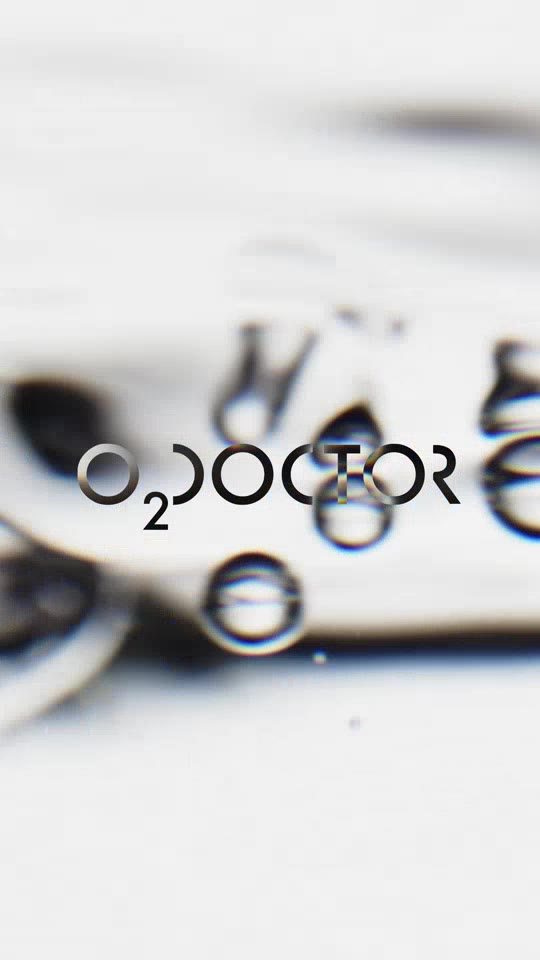
Extra Branded Video #1: O2 Doctor, Dra Ahn
A 10 second brand sting for O2 Doctor.
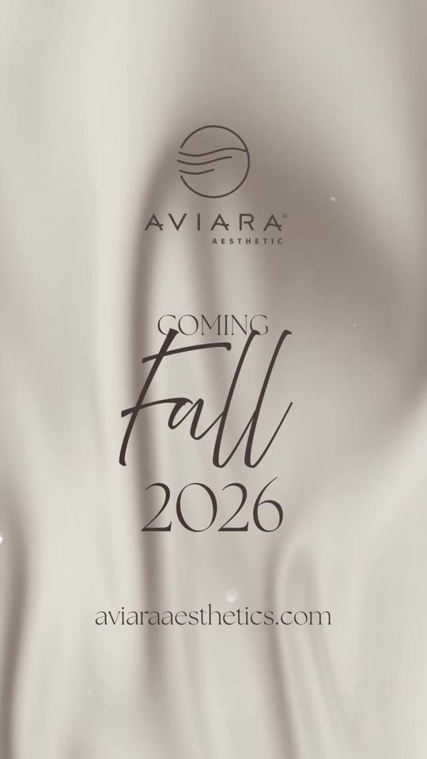
Extra Video #2: Aviara Aesthetic Story
A 15 second announcement made from one continuous shot of moving fabric and four type cards.
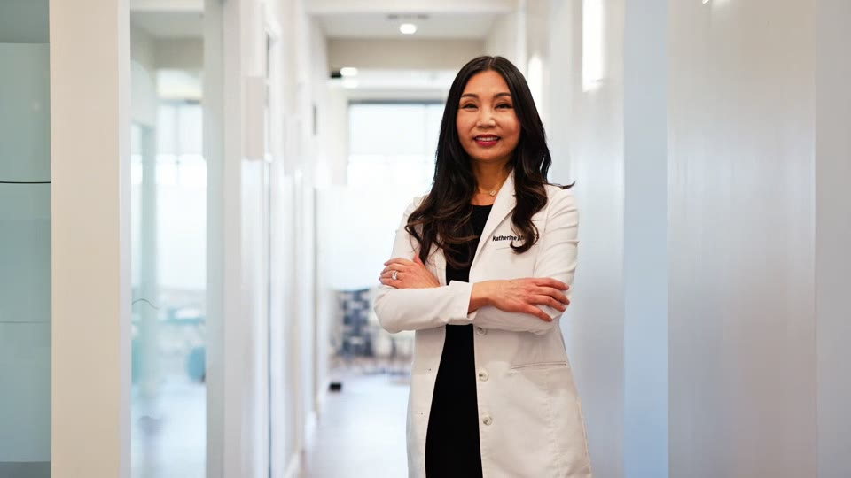
Website Asset: Dr. Ahn
A 26 second muted loop for the top of Dr. Ahn's website.
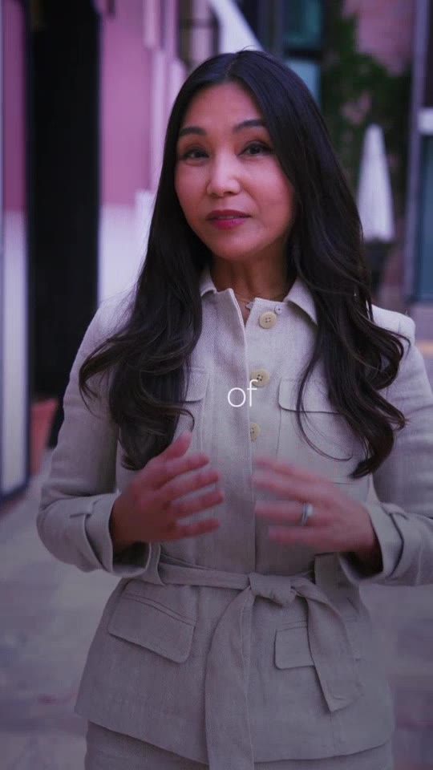
Aviara #1: Dr. Ahn, Beverly Hills
The first reel that introduces Aviara and Dr. Ahn.
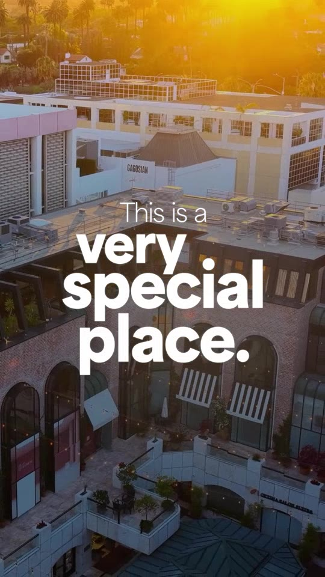
Aviara #2: Dra Ahn, Aviara Video
A 29 second reel that announces the new office before it is built.
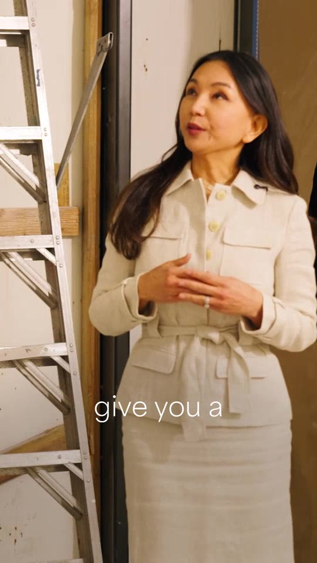
Aviara #3: Dr. Ahn, Local Tour
This is the standard for every tour we edit from here on.
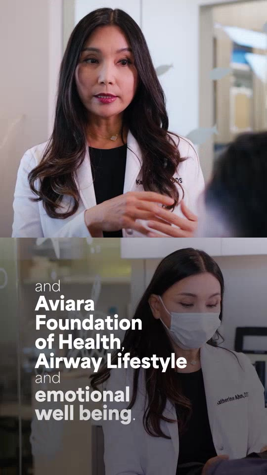
Aviara #4: Aviara Aesthetic Vertical Video, LED Screen
A 33 second vertical piece built for the video wall inside the clinic.
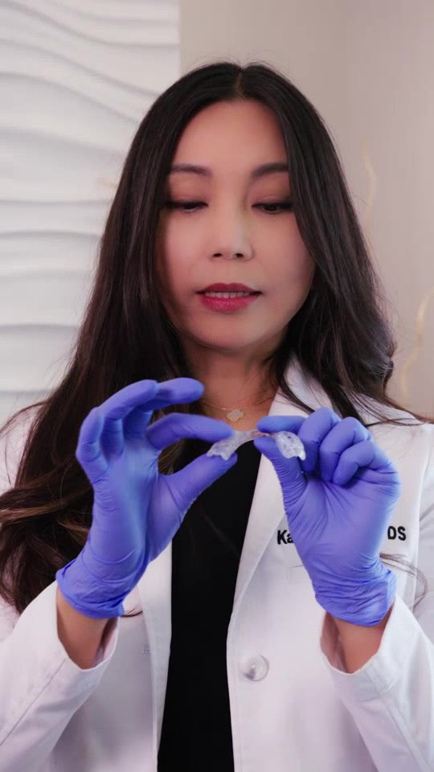
Aviara #5: Patient Case Explanation by Dr. Ahn
Dr. Ahn explains a patient's oral appliance with the device in her hands, intercut with the patient's visit, stock close-ups, an airway diagram and fabric resets.
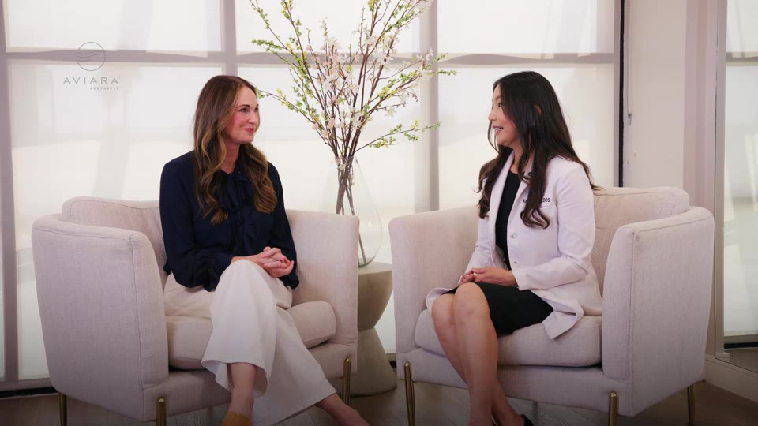
Aviara #6: Dr. Ahn & Micah, Podcast Interview Episode
A five minute sit-down between Dr. Ahn and her patient Micah.
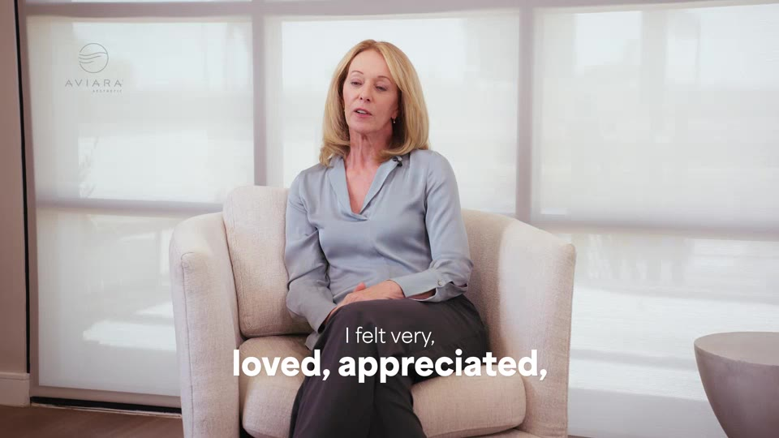
Aviara #7: Testimonial, Riley Stevens
Riley talks about her chronic migraines and how Dr. Ahn looked at her whole body, not just her jaw.
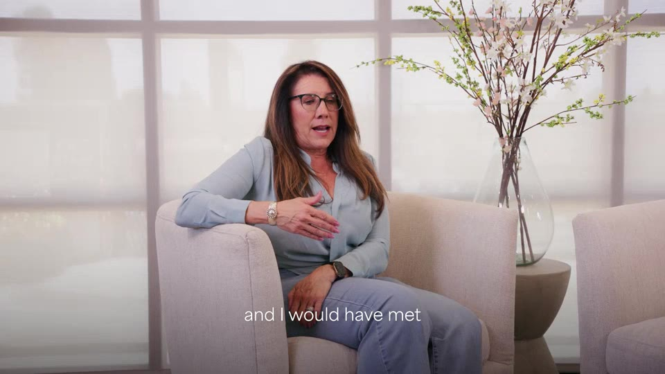
Aviara #8: Testimonial, Deneen Mercado
Deneen opens with "If I could go back" and the edit proves every line with B-roll from her visit: the front desk, the hallway, the handshake, the exam and a real laugh with Dr. Ahn at the end.
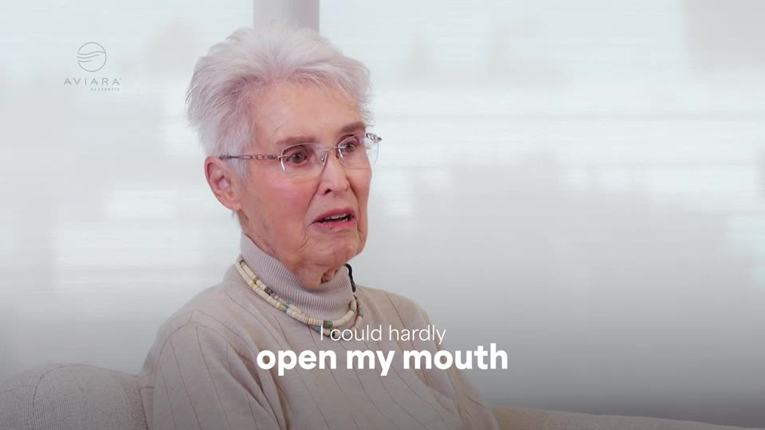
Aviara #9: Testimonial, Anne Nieto
Anne came from Cyprus with years of jaw pain.
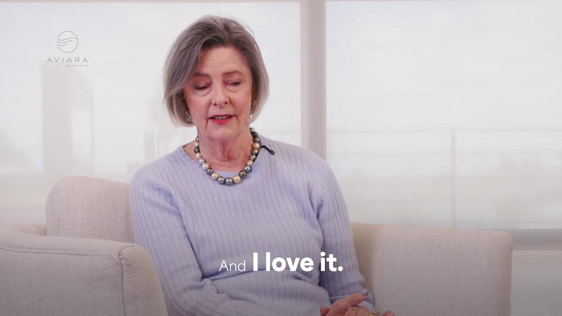
Aviara #10: Testimonial, Denise Riley
The longest testimonial at 2:17.